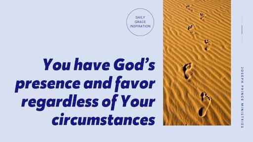

JE PUIS TOUT PAR CELUI QUI ME FORTIFIE.
Philippiens 4 : 13
01Jan
02Jan
03Jan
04Jan
05Jan
06Jan
07Jan
08Jan
09Jan
10Jan
11Jan
12Jan
13Jan
14Jan
15Jan
16Jan
17Jan
18Jan
19Jan
20Jan
21Jan
22Jan
23Jan
24Jan
25Jan
26Jan
27Jan
28Jan
29Jan
30Jan
31Jan
01Fev
02Fev
03Fev
04Fev
05Fev
06Fev
07Fev
08Fev
09Fev
10Fev
11Fev
12Fev
13Fev
14Fev
15Fev
16Fev
17Fev
18Fev
19Fev
20Fev
21Fev
22Fev
23Fev
24Fev
25Fev
26Fev
27Fev
28Fev
01Mars
02Mars
03Mars
04Mars
05Mars
06Mars
07Mars
08Mars
09Mars
10Mars
11Mars
12Mars
13Mars
14Mars
15Mars
16Mars
17Mars
18Mars
19Mars
20Mars
21Mars
22Mars
23Mars
24Mars
25Mars
26Mars
27Mars
28Mars
29Mars
30Mars
31Mars
Mercredi 01 mars 2023
| Matthieu 17:26-27 |
| 26 Il lui dit: Des étrangers. Et Jésus lui répondit: Les fils en sont donc exempts. 27 Mais, pour ne pas les scandaliser, va à la mer, jette l'hameçon, et tire le premier poisson qui viendra; ouvre-lui la bouche, et tu trouveras un statère. Prends-le, et donne-le-leur pour moi et pour toi.td> |
| Jean 16:8-11 |
| 8 Et quand il sera venu, il convaincra le monde en ce qui concerne le péché, la justice, et le jugement: 9 en ce qui concerne le péché, parce qu'ils ne croient pas en moi; 10 la justice, parce que je vais au Père, et que vous ne me verrez plus; 11 le jugement, parce que le prince de ce monde est jugé. |
Jeudi 02 mars 2023
| Psaume 91:5-6 |
| 5 Tu ne craindras ni les terreurs de la nuit, Ni la flèche qui vole de jour, 6 Ni la peste qui marche dans les ténèbres, Ni la contagion qui frappe en plein midi. |
| Romains 12:2 |
| 2Ne vous conformez pas au siècle présent, mais soyez transformés par le renouvellement de l'intelligence, afin que vous discerniez quelle est la volonté de Dieu, ce qui est bon, agréable et parfait. |
Vendredi 03 mars 2023
| Exode 8 :22-23 |
| 22 Mais, en ce jour-là, je distinguerai le pays de Gosen où habite mon peuple, et là il n'y aura point de mouches, afin que tu saches que moi, l'Éternel, je suis au milieu de ce pays. 23 J'établirai une distinction entre mon peuple et ton peuple. Ce signe sera pour demain. |
| 1 Jean 4:18 |
| 18La crainte n'est pas dans l'amour, mais l'amour parfait bannit la crainte; car la crainte suppose un châtiment, et celui qui craint n'est pas parfait dans l'amour. |
Samedi 04 mars 2023
| 2 Chroniques 20:6 |
| 6 Et il dit: Éternel, Dieu de nos pères, n'es-tu pas Dieu dans les cieux, et n'est-ce pas toi qui domines sur tous les royaumes des nations? N'est-ce pas toi qui as en main la force et la puissance, et à qui nul ne peut résister? |
| Romains 10:17 |
| 17 Ainsi la foi vient de ce qu'on entend, et ce qu'on entend vient de la parole de Christ. |
Dimanche 05 mars 2023
| Romains 5:17 |
| 17 Si par l'offense d'un seul la mort a régné par lui seul, à plus forte raison ceux qui reçoivent l'abondance de la grâce et du don de la justice régneront-ils dans la vie par Jésus Christ lui seul. |
| Matthew 7:11 |
| 11 Si donc, méchants comme vous l'êtes, vous savez donner de bonnes choses à vos enfants, à combien plus forte raison votre Père qui est dans les cieux donnera-t-il de bonnes choses à ceux qui les lui demandent. |
Lundi 06 mars 2023
| Jérémie 31:3 |
| 3 De loin l'Éternel se montre à moi: Je t'aime d'un amour éternel; C'est pourquoi je te conserve ma bonté. |
 |
| Esther 9:22 |
| 22 comme les jours où ils avaient obtenu du repos en se délivrant de leurs ennemis, de célébrer le mois où leur tristesse avait été changée en joie et leur désolation en jour de fête, et de faire de ces jours des jours de festin et de joie où l'on s'envoie des portions les uns aux autres et où l'on distribue des dons aux indigents. |
Mardi 07 mars 2023
| Romains 5:17 |
| 17 Si par l'offense d'un seul la mort a régné par lui seul, à plus forte raison ceux qui reçoivent l'abondance de la grâce et du don de la justice régneront-ils dans la vie par Jésus Christ lui seul. |
| 2 Corinthiens 3:14, 18 |
| 14 Mais ils sont devenus durs d'entendement. Car jusqu'à ce jour le même voile demeure quand, ils font la lecture de l'Ancien Testament, et il ne se lève pas, parce que c'est en Christ qu'il disparaît. 18 Nous tous qui, le visage découvert, contemplons comme dans un miroir la gloire du Seigneur, nous sommes transformés en la même image, de gloire en gloire, comme par le Seigneur, l'Esprit. |
Mercredi 08 mars 2023
| 1 Jean 4:9 |
| 9 L'amour de Dieu a été manifesté envers nous en ce que Dieu a envoyé son Fils unique dans le monde, afin que nous vivions par lui. |
| 2 Corinthiens 10:3-4 |
| 3 Si nous marchons dans la chair, nous ne combattons pas selon la chair. 4 Car les armes avec lesquelles nous combattons ne sont pas charnelles; mais elles sont puissantes, par la vertu de Dieu, pour renverser des forteresses. |
Jeudi 09 mars 2023
| Luc 10:17-19 |
| 17 Les soixante-dix revinrent avec joie, disant: Seigneur, les démons mêmes nous sont soumis en ton nom. 18 Jésus leur dit: Je voyais Satan tomber du ciel comme un éclair. 19 Voici, je vous ai donné le pouvoir de marcher sur les serpents et les scorpions, et sur toute la puissance de l'ennemi; et rien ne pourra vous nuire. |
| Psaume 91:5-6 |
| 5 Tu ne craindras ni les terreurs de la nuit, Ni la flèche qui vole de jour, 6 Ni la peste qui marche dans les ténèbres, Ni la contagion qui frappe en plein midi. |
Vendredi 10 mars 2023
| Galates 5:1 |
| 1 C'est pour la liberté que Christ nous a affranchis. Demeurez donc fermes, et ne vous laissez pas mettre de nouveau sous le joug de la servitude. |
| Actes 20:7 |
| 7 Le premier jour de la semaine, nous étions réunis pour rompre le pain. Paul, qui devait partir le lendemain, s'entretenait avec les disciples, et il prolongea son discours jusqu'à minuit. |
Samedi 11 mars 2023
| Colossiens 2:13–14 |
| 13 Vous qui étiez morts par vos offenses et par l'incirconcision de votre chair, il vous a rendus à la vie avec lui, en nous faisant grâce pour toutes nos offenses; 14 il a effacé l'acte dont les ordonnances nous condamnaient et qui subsistait contre nous, et il l'a détruit en le clouant à la croix; |
| Romains 2:4 |
| 4 Ou méprises-tu les richesses de sa bonté, de sa patience et de sa longanimité, ne reconnaissant pas que la bonté de Dieu te pousse à la repentance? |
Dimanche 12 mars 2023
| Marc 5:1–2, 8 |
| 1 Ils arrivèrent à l'autre bord de la mer, dans le pays des Gadaréniens. 2 Aussitôt que Jésus fut hors de la barque, il vint au-devant de lui un homme, sortant des sépulcres, et possédé d'un esprit impur. 8 Car Jésus lui disait: Sors de cet homme, esprit impur! |
| Hébreux 10:12, 14 |
| 12 lui, après avoir offert un seul sacrifice pour les péchés, s'est assis pour toujours à la droite de Dieu, 14 Car, par une seule offrande, il a amené à la perfection pour toujours ceux qui sont sanctifiés. |
Lundi 13 mars 2023
| 2 Timothée 4:18 |
| 18 Le Seigneur me délivrera de toute oeuvre mauvaise, et il me sauvera pour me faire entrer dans son royaume céleste. A lui soit la gloire aux siècles des siècles! Amen! |
| Ecclésiaste 9: 11-12 |
| 11 J'ai encore vu sous le soleil que la course n'est point aux agiles ni la guerre aux vaillants, ni le pain aux sages, ni la richesse aux intelligents, ni la faveur aux savants; car tout dépend pour eux du temps et des circonstances. 12 L'homme ne connaît pas non plus son heure, pareil aux poissons qui sont pris au filet fatal, et aux oiseaux qui sont pris au piège; comme eux, les fils de l'homme sont enlacés au temps du malheur, lorsqu'il tombe sur eux tout à coup. |
Mardi 14 mars 2023
| Jean 15:4-5 |
| 4 Demeurez en moi, et je demeurerai en vous. Comme le sarment ne peut de lui-même porter du fruit, s'il ne demeure attaché au cep, ainsi vous ne le pouvez non plus, si vous ne demeurez en moi. 5 Je suis le cep, vous êtes les sarments. Celui qui demeure en moi et en qui je demeure porte beaucoup de fruit, car sans moi vous ne pouvez rien faire. |
|  |
| Psaume 139:7–10 |
| 7 Où irais-je loin de ton esprit, Et où fuirais-je loin de ta face? 8 Si je monte aux cieux, tu y es; Si je me couche au séjour des morts, t'y voilà. 9 Si je prends les ailes de l'aurore, Et que j'aille habiter à l'extrémité de la mer, 10 Là aussi ta main me conduira, Et ta droite me saisira. |
Mercredi 15 mars 2023
| Romains 10:17 |
| 17 Ainsi la foi vient de ce qu'on entend, et ce qu'on entend vient de la parole de Christ. |
| Romains 8:15-16 |
| 15 Et vous n'avez point reçu un esprit de servitude, pour être encore dans la crainte; mais vous avez reçu un Esprit d'adoption, par lequel nous crions: Abba! Père! 16 L'Esprit lui-même rend témoignage à notre esprit que nous sommes enfants de Dieu. |
Jeudi 16 mars 2023
| 1 Thessaloniciens 5:20-21 |
| 20 Ne méprisez pas les prophéties. 21 Mais examinez toutes choses; retenez ce qui est bon; |
| Romains 5 :1-2 |
| 1 Étant donc justifiés par la foi, nous avons la paix avec Dieu par notre Seigneur Jésus Christ, 2 à qui nous devons d'avoir eu par la foi accès à cette grâce, dans laquelle nous demeurons fermes, et nous nous glorifions dans l'espérance de la gloire de Dieu. |
Vendredi 17 mars 2023
| Philippiens 4: 6-7 |
| 6 Ne vous inquiétez de rien; mais en toute chose faites connaître vos besoins à Dieu par des prières et des supplications, avec des actions de grâces. 7 Et la paix de Dieu, qui surpasse toute intelligence, gardera vos coeurs et vos pensées en Jésus Christ. |
| Osée 2:15 |
| 15 Là, je lui donnerai ses vignes et la vallée d'Acor, comme une porte d'espérance, et là, elle chantera comme au temps de sa jeunesse, et comme au jour où elle remonta du pays d'Égypte. |
Samedi 18 mars 2023
 |
| Philippiens 2:13 |
| 13 car c'est Dieu qui produit en vous le vouloir et le faire, selon son bon plaisir. |
| Jean 6:48-50 |
| 48 Je suis le pain de vie. 49 Vos pères ont mangé la manne dans le désert, et ils sont morts. 50 C'est ici le pain qui descend du ciel, afin que celui qui en mange ne meure point. |
Dimanche 19 mars 2023
| Hébreux 13:2 |
| 2 N'oubliez pas l'hospitalité; car, en l'exerçant, quelques-uns ont logé des anges, sans le savoir. |
| Esaïe 54:9–10 |
| 9 Il en sera pour moi comme des eaux de Noé: J'avais juré que les eaux de Noé ne se répandraient plus sur la terre; Je jure de même de ne plus m'irriter contre toi Et de ne plus te menacer. 10 Quand les montagnes s'éloigneraient, Quand les collines chancelleraient, Mon amour ne s'éloignera point de toi, Et mon alliance de paix ne chancellera point, Dit l'Éternel, qui a compassion de toi. |
Lundi 20 mars 2023
| Romains 11:6 |
| 6 Or, si c'est par grâce, ce n'est plus par les oeuvres; autrement la grâce n'est plus une grâce. Et si c'est par les oeuvres, ce n'est plus une grâce; autrement l'oeuvre n'est plus une oeuvre. |
| Josué 14:14 |
| 14 C'est ainsi que Caleb, fils de Jephunné, le Kenizien, a eu jusqu'à ce jour Hébron pour héritage, parce qu'il avait pleinement suivi la voie de l'Éternel, le Dieu d'Israël. |
Mardi 21 mars 2023
 |
| Jean 14:13 |
| 13 et tout ce que vous demanderez en mon nom, je le ferai, afin que le Père soit glorifié dans le Fils. |
| Psaume 132:13–16 |
| 13 Oui, l'Éternel a choisi Sion, Il l'a désirée pour sa demeure: 14 C'est mon lieu de repos à toujours; J'y habiterai, car je l'ai désirée. 15 Je bénirai sa nourriture, Je rassasierai de pain ses indigents; 16 Je revêtirai de salut ses sacrificateurs, Et ses fidèles pousseront des cris de joie. |
Mercredi 22 mars 2023
| Cantiques 5:16 |
| 5 Son palais n'est que douceur, Et toute sa personne est pleine de charme. Tel est mon bien-aimé, tel est mon ami, Filles de Jérusalem! |
| 1 Corinthiens 1:27, 29 |
| 27 Mais Dieu a choisi les choses folles du monde pour confondre les sages; Dieu a choisi les choses faibles du monde pour confondre les fortes; 29 afin que nulle chair ne se glorifie devant Dieu. |
Jeudi 23 mars 2023
| Genèse 15: 7-8, 18 |
| 7 L'Éternel lui dit encore: Je suis l'Éternel, qui t'ai fait sortir d'Ur en Chaldée, pour te donner en possession ce pays. 8 Abram répondit: Seigneur Éternel, à quoi connaîtrai-je que je le posséderai? 18 En ce jour-là, l'Éternel fit alliance avec Abram, et dit: Je donne ce pays à ta postérité, depuis le fleuve d'Égypte jusqu'au grand fleuve, au fleuve d'Euphrate, |
| Romains 8:1 |
| 1 Il n'y a donc maintenant aucune condamnation pour ceux qui sont en Jésus Christ. |
Vendredi 24 mars 2023
| Romains 5:17 |
| 17 Si par l'offense d'un seul la mort a régné par lui seul, à plus forte raison ceux qui reçoivent l'abondance de la grâce et du don de la justice régneront-ils dans la vie par Jésus Christ lui seul. |
| Actes 14:8–10 |
| 8 A Lystre, se tenait assis un homme impotent des pieds, boiteux de naissance, et qui n'avait jamais marché. 9 Il écoutait parler Paul. Et Paul, fixant les regards sur lui et voyant qu'il avait la foi pour être guéri, 10 dit d'une voix forte: Lève-toi droit sur tes pieds. Et il se leva d'un bond et marcha. |
Samedi 25 mars 2023
| Jean 3:14-15 |
| 14 Et comme Moïse éleva le serpent dans le désert, il faut de même que le Fils de l'homme soit élevé, 15 afin que quiconque croit en lui ait la vie éternelle. |
| 1 Corinthiens 6:15, 19-20 |
| 15 Ne savez-vous pas que vos corps sont des membres de Christ? Prendrai-je donc les membres de Christ, pour en faire les membres d'une prostituée? 19 Ne savez-vous pas que votre corps est le temple du Saint Esprit qui est en vous, que vous avez reçu de Dieu, et que vous ne vous appartenez point à vous-mêmes? 20 Car vous avez été rachetés à un grand prix. Glorifiez donc Dieu dans votre corps et dans votre esprit, qui appartiennent à Dieu. |
Dimanche 26 mars 2023
| Matthieu 6:31-32 |
| 31 Ne vous inquiétez donc point, et ne dites pas: Que mangerons-nous? que boirons-nous? de quoi serons-nous vêtus? 32 Car toutes ces choses, ce sont les païens qui les recherchent. Votre Père céleste sait que vous en avez besoin. |
| Galates 3:13-14 |
| 13 Christ nous a rachetés de la malédiction de la loi, étant devenu malédiction pour nous-car il est écrit: Maudit est quiconque est pendu au bois, - 14 afin que la bénédiction d'Abraham eût pour les païens son accomplissement en Jésus Christ, et que nous reçussions par la foi l'Esprit qui avait été promis. |
Lundi 27 mars 2023
| Romains 7:24-25 |
| 24 Misérable que je suis! Qui me délivrera du corps de cette mort?... 25 Grâces soient rendues à Dieu par Jésus Christ notre Seigneur!... Ainsi donc, moi-même, je suis par l'entendement esclave de la loi de Dieu, et je suis par la chair esclave de la loi du péché. |
| Esaïe 41: 11-13 |
| 11 Voici, ils seront confondus, ils seront couverts de honte, Tous ceux qui sont irrités contre toi; Ils seront réduits à rien, ils périront, Ceux qui disputent contre toi. 12 Tu les chercheras, et ne les trouveras plus, Ceux qui te suscitaient querelle; Ils seront réduits à rien, réduits au néant, Ceux qui te faisaient la guerre. 13 Car je suis l'Éternel, ton Dieu, Qui fortifie ta droite, Qui te dis: Ne crains rien, Je viens à ton secours. |
Mardi 28 mars 2023
| Galates 2:20 |
| 20 J'ai été crucifié avec Christ; et si je vis, ce n'est plus moi qui vis, c'est Christ qui vit en moi; si je vis maintenant dans la chair, je vis dans la foi au Fils de Dieu, qui m'a aimé et qui s'est livré lui-même pour moi. |
| 1 Corinthiens 6:17 |
| 17 Mais celui qui s'attache au Seigneur est avec lui un seul esprit. |
Mercredi 29 mars 2023
| Proverbes 23:7 |
| 7 Car il est comme les pensées de son âme. Mange et bois, te dira-t-il; Mais son coeur n'est point avec toi. |
| 2 Rois 6:16 |
| 16 Il répondit: Ne crains point, car ceux qui sont avec nous sont en plus grand nombre que ceux qui sont avec eux. |
Jeudi 30 mars 2023
| Proverbes 30:5 |
| 5 Toute parole de Dieu est éprouvée. Il est un bouclier pour ceux qui cherchent en lui un refuge. |
| Romains 6:23 |
| 23 Car le salaire du péché, c'est la mort; mais le don gratuit de Dieu, c'est la vie éternelle en Jésus Christ notre Seigneur. |
Vendredi 31 mars 2023
| Psaume 68:1 |
| 1 Dieu se lève, ses ennemis se dispersent, Et ses adversaires fuient devant sa face. |
| Proverbes 3:12 |
| 12 Car l'Éternel châtie celui qu'il aime, Comme un père l'enfant qu'il chérit. |